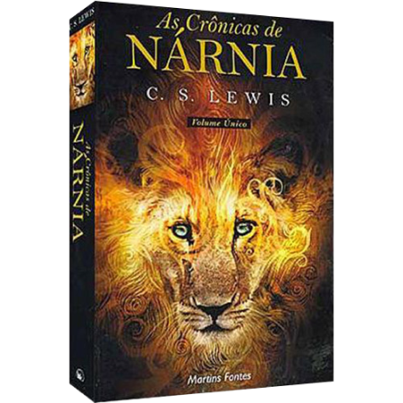

Precisa de Ajuda
Artefatos Cristãos
Cabeceira
Entrar
Categorias
Livros
Outlet

As Crônicas de Nárnia | Volume Único | C. S. Lewis
Livro As crônicas de Nárnia, escrito pelo renomado autor Clive Staples Lewis. Há cerca de 60 anos, C.S. Lewis criou uma terra fantástica de magia e encantamento chamada Nárnia e, desde então, mais de 60 milhões de leitores descobriram o mundo surpreendentemente admirável e maravilhoso que existe além dos fundos de um guarda-roupa.
De R$ 99,00
R$ 50,00
Comprar
DETALHE DO PRODUTO
Livro As crônicas de Nárnia, escrito pelo renomado autor Clive Staples Lewis. Há cerca de 60 anos, C.S. Lewis criou uma terra fantástica de magia e encantamento chamada Nárnia e, desde então, mais de 60 milhões de leitores descobriram o mundo surpreendentemente admirável e maravilhoso que existe além dos fundos de um guarda-roupa. E aqui você poderá conhecer toda essa magia!
As Crônicas de Nárnia (The Chronicles of Narnia, no original em inglês), é uma série de sete livros de fantasia, vendidos separadamente ou em um compêndio que reúne todos os volumes, escrita pelo autor britânico Clive Staples Lewis (conhecido simplesmente como C. S. Lewis). É a obra mais conhecida do autor, e a série é considerada um clássico da literatura infantil, tendo vendido mais de 120 milhões de cópias mundialmente, figurando como uma das obras literárias mais bem sucedidas e conhecidas de todos os tempos, traduzida em 41 idiomas. Escrito por Lewis entre 1949 e 1954, as Crônicas de Nárnia foram adaptadas diversas vezes, inteiramente ou parcialmente, para a rádio, televisão, teatro e cinema. Além dos tradicionais temas cristãos, a série usa caracteres da mitologia grega e nórdica, bem como os tradicionais contos de fadas.
Na sequência da sinopse do livro As Crônicas de Nárnia, apresenta-se, geralmente, as aventuras de algumas crianças inglesas que desempenham um papel central e descobrem o ficcional Reino de Nárnia, um lugar onde a magia é corriqueira, os animais falam, e ocorrem inúmeras batalhas entre o bem e o mal. Em todos os livros (com exceção de "O Cavalo e seu Menino") os personagens principais são crianças de nosso mundo, que são magicamente transportadas para Nárnia a fim de serem ajudadas e instruídas pelo Grande Leão conhecido como Aslam (ou Aslan, dependendo da tradução).
A respeito do autor, ainda durante sua infância, Lewis criava ilustrações para as histórias que escrevia. Quando o livro O Leão, a Feiticeira e o Guarda-Roupa estava prestes a ser publicado, ele havia pensado na possibilidade de ilustrá-lo, mas acabou solicitando uma desenhista profissional, Pauline Baynes, que na época tinha um pouco mais de vinte anos de idade, mas que já tinha ilustrado o último livro do autor J. R. R. Tolkien (chamado de Mestre Gil de Ham).
Lewis, então, decidiu que ela seria a pessoa ideal para ilustrar as pessoas e os fantásticos seres em O Leão, a Feiticeira e o Guarda-Roupa; porém ela acabou ilustrando os sete livros da série.
No Brasil, a série As Crônicas de Nárnia foi editada inicialmente pela ABU Editora, e era praticamente desconhecida até o lançamento do filme The Chronicles of Narnia: The Lion, the Witch and the Wardrobe, (AS crônicas de Nárnia: O leão, a feiticeira e o guarda roupas) que fez com que os livros fossem os mais vendidos no país.
Páginas
Formato
Profundidade
Profundidade
ISBN
Acabamento
Autor
Idioma
Ano da Edição
Peso
750
14 x 21 cm
3 cm
Martins Fontes
9788578270698
Brochura
C.S Lewis
Português
2009
790 gramas